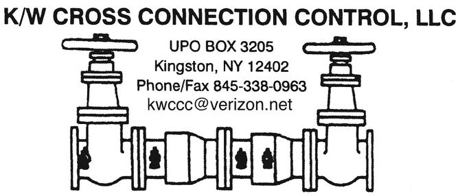

Backflow Device Testing
Annual and required testing of RPZ, Double Check Valve (DCV), and Double Check Detector Assembly (DCDA) backflow prevention devices.
↗Hudson Valley, NY · Testing since 1989
K/W Cross Connection Control, LLC provides backflow device testing and repairs throughout the Hudson Valley — Ulster, Orange, Dutchess, Westchester, Sullivan, Greene, and Albany counties. Barry Korol, owner, is our primary tester.
See what we test & repairRPZ, DCV & DCDA assemblies — certified, reported, and repaired.
Our company
K/W Cross Connection Control, LLC has been ready to do business since 1989, serving Dutchess, Ulster, Orange, Sullivan, and Greene counties, and is a proud member of the American Backflow Prevention Association.
Barry Korol, owner, is our primary tester. We're a full-service operation — backflow testing, repairs, inspecting, and consulting — and we pride ourselves on being thorough. Test forms go out within 48 hours of completion, and we're glad to submit results directly to your local Water Municipality and Health Department.
What we do
We handle the full cycle of backflow device compliance so your business or home stays protected and on record.
Annual and required testing of RPZ, Double Check Valve (DCV), and Double Check Detector Assembly (DCDA) backflow prevention devices.
↗If your device fails during testing, we repair it on the spot or within a reasonable time — no waiting weeks for a fix.
↗Cross-connection inspections and consulting to help businesses and homeowners stay compliant year to year.
↗We submit completed test results directly to your local Water Municipality and Health Department, and mail your paperwork within 48 hours.
↗We give a reminder call ahead of your test, work around business hours to avoid disrupting operations, and keep home appointments punctual.
↗
Where we work
We serve Ulster, Orange, Dutchess, Westchester, Sullivan, Greene, and Albany counties, to name a few. Drop us a line or give us a call to see if we service your area — and if a device fails its test, we're equipped to repair it right then and there.
Schedule a test
Give us a call or send an email with your device and location details. We'll get you scheduled and keep your paperwork on time.
(845) 338-0963